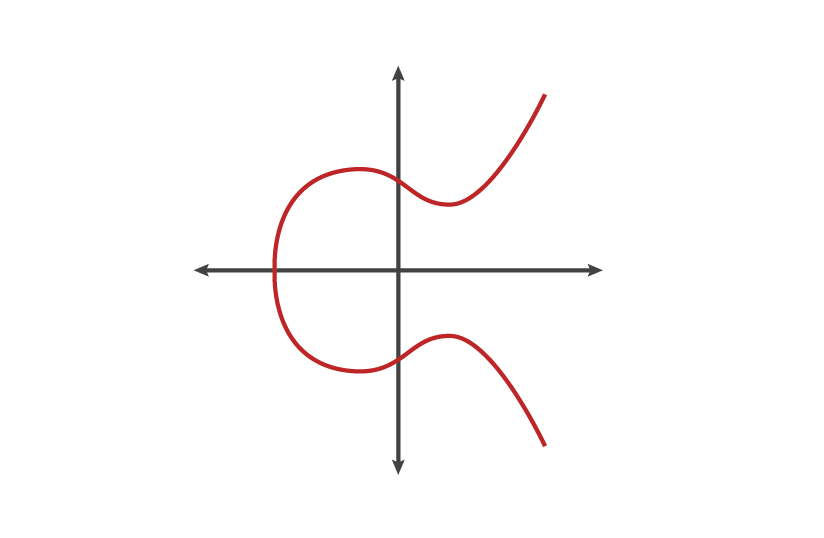

Olá, criançada! Vocês já imaginaram ter um segredo super especial que só você e seu melhor amigo conhecem? É isso que a criptografia faz! E hoje vamos aprender sobre um tipo muito legal de criptografia chamado "Criptografia de Curva Elíptica".
Imaginem uma montanha-russa muito doida, que sobe, desce e às vezes até dá voltas! Essa é mais ou menos a forma de uma curva elíptica. Na matemática, ela é descrita assim:
Onde 'a' e 'b' são números que escolhemos para dar forma à nossa curva.
Parece complicado, né? Mas não se preocupem! O importante é saber que essa equação cria uma forma especial que usamos para criar nossos segredos.
Vamos ver como ela se parece:
Legal, né? Essa curva é o nosso parquinho secreto para criar códigos super difíceis de decifrar!
Imaginem que cada ponto nessa curva é um esconderijo secreto.
Quando "pulamos" na curva, estamos na verdade somando pontos. É como se estivéssemos pulando de um esconderijo para outro. Matematicamente, fazemos assim:
Na verdade, é como se estivéssemos traçando uma linha entre dois pontos e vendo onde ela cruza nossa curva de novo!
Às vezes, queremos dar muitos pulos de uma vez. Isso é como multiplicar um ponto. Fazemos assim:
Onde P é nosso ponto inicial, k é quantas vezes queremos pular, e Q é onde acabamos.
O truque mágico é que é muito fácil pular para frente muitas vezes, mas quase impossível adivinhar quantas vezes pulamos só olhando onde paramos!
Na matemática, dizemos que é fácil calcular:
Mas é muito difícil descobrir k se só conhecemos Q e P. Isso se chama "problema do logaritmo discreto" - um nome chique para dizer que é um quebra-cabeça super difícil!
Com nossa curva mágica, podemos criar chaves secretas para trocar mensagens seguras. Funciona assim:
Matematicamente, isso funciona porque:
Essa "montanha-russa matemática" nos ajuda a criar senhas super fortes para proteger nossos segredos na internet. É tão forte que nem os computadores mais poderosos do mundo conseguem adivinhar nosso segredo!
E o mais legal? Podemos usar isso para enviar mensagens secretas, fazer compras seguras na internet e muito mais!
A criptografia de curva elíptica é como uma língua secreta super avançada que usamos para proteger nossas informações. Ela usa matemática complexa, mas no final, é como brincar de esconde-esconde com números!
Visualizar Fórmulas